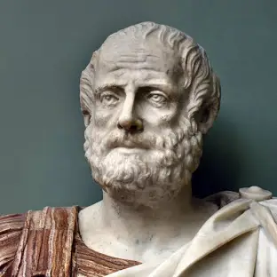

ငါးနှင့်တူသော်လည်း ငါးပဟုတ်ကြောင်း ခွဲခြားပြင်ခဲ့သော ထိုမျက်ဝန်း အရစ္စတိုတယ် ဝေလငါးရယ်၊ ဖျံရယ်၊ လင်းပိုင်ရယ်မှာ ဘယ်သတ္တဝါဟာ ငါး အမျိုးထဲမှာ ပါသလဲလို့ ညီလေးတို့ကို မေးခဲ့လျှင် ဘယ်လိုဖြေကြမလဲ။ ဝေလငါးပါလို့ ဖြေမိကြမှာပေါ့။ အမှန်တော့ ဝေလငါးဟာ ငါးအစစ် မဟုတ်ဘူးကွဲ့။ ညီလေးတို့၊ အစ်ကိုကြီးတို့လို နို့တိုက်သတ္တဝါမျိုး ဖြစ်တယ် လို့ လို့ပြောလျှင် ညီလေးတို့တစ်တွေ “ဟယ်”ခနဲ အံ့သြသွားကြလိမ့်မယ်။ ညီလေးတို့က ဝေလငါ ကို ငါးဖြစ်တယ်လို့ ရုတ်တရက် ဖြေလိုက်တာကို အစ်ကိုကြီး အပြစ်မပြောလိုပါဘူး။ ကြည့်လေ- ဝေလငါးက ရေထဲမှာ နေတယ်။ ငါးတစ်ကောင်လိုပဲ အမြီးတွေ၊ ရေယက်တွေ ပါနေတယ်ဆိုတော့ ရုတ်တရက် ငါးလို့ပဲ ထင်မိကြတာ မဆန်းဘူးပေါ့။ အမှန်တော့ သတ္တဝါတွေကို သူတို့နေတဲ့ ပတ်ဝန်းကျင်နဲ့ ပြင်ပ ပုံပန်းကိုကြည့်ပြီး အမျိုးအစားသတ်မှတ်တာဟာ မပြည့်စုံဘူးကွဲ့။ မြန်မာ ပြည်မှာနေတိုင်း၊ ပုဆိုးဝတ်ထားတိုင်း မြန်မာလူမျိုးလို့ ပြောလို့မရသလိုပဲ ပေါ့ကွယ်။ မျိုးခွဲနည်းပညာကို ကမ္ဘာပေါ်မှာ သိပ္ပံနည်းကျကျ ပထမဆုံး ဖော်ထုတ်ခဲ့တူသူကတော့ ဟိုးနှစ်ပေါင်း နှစ်ထောင့်သုံးရာကျော်လောက်က ဂရိနိုင်ငံမှာ ပေါ်ပေါက်ခဲ့တဲ့ သိပ္ပံပညာရှင်ကြီး အရစ္စတိုတယ် ဖြစ်တယ်။ သူ့ကို ဘီစီ ၂၈၄ ခုနှစ်လောက်က ဂရိနိုင်ငံမြောက်ပိုင်း စတာဂဲ့လော့စ် မြို့ကလေးမှာ မွေးဖွားခဲ့တယ်။ အဲဒီအချိန်တုန်းက ဂရိနိုင်ငံဟာ ဥရောပ တိုက်တစ်တိုက်လုံးမှာ ယဉ်ကျေးမှုအထွန်းကားဆုံး နိုင်ငံတစ်ခု ဖြစ်ခဲ့တာ ပေါ့ကွယ်။
အရစ္စတိုတယ်ဟာ အသက် ၁၇ နှစ်သား အရွယ်မှာ အာဘီနက် မြို့မှာရှိတဲ့ ပညာရှိကြီး ပလေတိုထံမှာ ပညာဆည်းပူးခဲ့တယ်။ သူဟာ ငယ်ငယ်ကလေးထဲက စူးစမ်းတာ ဝါသနာပါလေတော့ ကြက်ဥကနေ ကြက်ကလေး ဘယ်လို အဆင့်ဆင့်ပြောင်းလဲလာတယ်ဆိုတာ အသေးစိတ် တိတိကျကျလေ့လာပြီး ဖော်ပြခဲ့တယ်။ အခြားအကောင်အမျိုးမျိုး၊ အပင် အမျိုးမျိုးကိုလည်း စနစ်တကျလေ့လာခဲ့လို ပလေတိုရဲ့ အကယ်ဒီမီးယား ဆိုတဲ့ ကျောင်းတော်ကြီးမှာ အတော်ဆုံးတပည့် ဖြစ်ခဲ့တယ်။ ဆရာကြီး ပလေတိုကတောင် “တစ်ခြားကျောင်းသားတွေရဲ့ ခေါင်းထဲမှာ အဝိဇ္ဇာပဲ ရှိတယ်။ အရစ္စတိုရဲ့ ခေါင်းထဲမှာတော့ ဉာဏ်ပညာတွေနဲ့ ပြည့်နေတယ် လို့” ချီးကျူးပြောဆိုခဲ့ရတယ်။ ဒီလိုနဲ့ အရစ္စတိုတယ်ဟာ အနှစ်နှစ်ဆယ်လုံးလုံး အရှေ့အလယ်ပိုင်း ဒေသတစ်ဝှမ်းလုံးကို လှည့်လည်သွားလာပြီး အပင်တွေ၊ အကောင်တွေကို လေ့လာကာ သိပ္ပံကျမ်းပေါင်းများစွာကို ရေးနိုင်ခဲ့တယ်။ အထူးသဖြင့် တိရစ္ဆာန်အမျိုးမျိုးကို ပိုပြီး စိတ်ဝင်စားခဲ့တယ်။ ဒါကြောင့်လဲပဲ နောင်လာ နောက်သားတွေက အရစ္စတိုတယ်ကို “ဇီဝဗေဒပညာ၏ ဖခင်ကြီး”ရယ်လို့ တင်စားခေါ်ဝေါ်ခဲ့တာပေါ့ကွယ်။ ရှေးတုန်းက ဝေလငါးဟာ အခုလို မရှားပါးသေးဘူး။ နေရာတိုင်း မှာ တွေ့နိုင်တယ်။ ဂရိနိုင်ငံမှာလည်း အများကြီးတွေ့ရတယ်။ ဝေလငါးက ရေထဲမှာနေပြီး အမြီးတွေ၊ ရေယက်တွေနဲ့ ကူးခတ်သွားလာနေလေတော့ ဧရာမငါးသတ္တဝါကြီးတွေလို့ လူတိုင်းက ထင်မှတ်ခဲ့ကြတာ မဆန်းဘူးပေါ့ ကွယ်။ ဒါပေမယ့် အရစ္စတိုတယ်ကတော့ သူများတွေလို အပေါ်ယံလောက် ကိုသာကြည့်ပြီး အလောသုံးဆယ် မဆုံးဖြတ်ဘူး။ ဝေလငါးဟာ ငါးနဲ့ တူတာ မှန်ပေမယ့် ငါးနဲ့ခြားနားချက်တွေကိုလည်း သတိထား ကြည့်ရှုမိ တယ်။ ငါးဆိုတာ အကြေးခွံ ရှိတယ်။ ပါးဟက်နဲ့ အသက်ရှူတယ်။ ဥက ပေါက်တယ်။ ဝေလငါးမှာက အကြေးခွံလည်း မရှိဘူး၊ ပါးဟက်နဲ့ အသက်မရှူဘဲ အဆုတ်နဲ့ အသက်ရှူတယ်။ ဥကမပေါက်ဘဲ အကောင် လိုက် မွေးဖွားတယ်။ ပြီးတော့ သားငယ်တွေကို နို့ချိုတိုက်ကျွေးပြန်သေး တယ်။ ဒီလိုဆိုရင် ဝေလငါးဟာ ရေထဲမှာနေတာ မှန်ပေမယ့်၊ ငါးနဲ့ တူပေမယ့် ငါး မဖြစ်နိုင်ဘူး။ ကုန်းပေါ်မှာနေထိုင်ကြတဲ့ သတ္တဝါတွေထဲက အဆင့်အတန်း အမြင့်မားဆုံးဖြစ်တဲ့ နို့တိုက်သတ္တဝါပဲ ဖြစ်ရမယ်လို့ အရစ္စတိုတယ်က ကောက်ချက်ချလိုက်တယ်။ သက်ရှိတွေရဲ့ တူညီတဲ့အရည်အချင်းတွေကို နှိုင်းယှဉ်ပြီး အုပ်စုခွဲတဲ့ ပညာကို သိပ္ပံပညာရပ်ထဲမှာ တက်ဖိုနိုမိ(သရုပ်ခွဲလေ့လာပညာ)လို့ ခေါ် တယ်ကွဲ့။ ဒီလိုဆိုရင် အရစ္စတိုတယ်ဟာ သတ္တဗေဒဘာသာရပ်နယ်ပယ်မှာ သရုပ်ခွဲလေ့လာခြင်း ပညာရပ်ကို ပထမဦးဆုံး အသုံးပြုခဲ့တဲ့ ပညာရှင်ကြီးလို့ ခေါ်ရမှာပေါ့ကွယ်။ သူဟာ သတ္တဝါတွေရဲ့ အရိုးရှင်းဆုံး ဖွဲ့စည်းတည် ဆောက်ပုံကနေ အရှုပ်ထွေးဆုံးအဆင့်အထိ စနစ်တကျလေ့လာပြီး ဝေလငါးဟာ လူ၊ မြင်း၊ သမင် စတဲ့ အမြင့်မားဆုံး နို့တိုက်သတ္တဝါပဲ ဖြစ်တယ်လို့ ပြောင်မြောက်စွာ ဖော်ထုတ်နိုင်ခဲ့တယ်။ ဒါဟာ သတ္တဗေဒ လောကကြီးမှာ အလွန်ကြီးမားတဲ့ အောင်မြင်မှုတစ်ခု ဖြစ်တယ်လို့ ဆိုကြရ လိမ့်မယ်။ ဘာကြောင့်လဲဆိုတော့ သူမတိုင်ခင်က ပညာရှင်အားလုံးဟာ ဝေလငါးတို့၊ လင်းပိုင်တို့ကို ငါးအုပ်မျိုးအုပ်စုထဲမှာ ထည့်ထားခဲ့ကြလို့ပဲ ဖြစ်တယ်။
အမှန်တော့ အရစ္စတိုတယ်ဟာ လုံးဝ အမှားကင်းတဲ့ ပညာရှင် တစ်ယောက်တော့ မဟုတ်ရှာပါဘူးကွဲ့။ သူ့ဆရာကြီးဖြစ်တဲ့ ပလေတိုရဲ့ သင်ကြားချက်ကို မျက်စေ့မှိတ်ယုံကြည်ခဲ့သူ ဖြစ်လေတော့ သဘာဝတရား ကြီးမှာ ရေ၊ လေ၊ မြေ၊ မီး ဆိုတဲ့ ဒြပ်စင်လေးမျိုးသာရှိပြီး လေဟာနယ် ဆိုတာ မရှိကြောင်း၊ ပိုးမွှား၊ ယင်ကောင်များသည် အမှိုက်သရိုက်မှတစ်ဆင့် ဖြစ်လာကြောင်း စသည်ဖြင့် ဒီနေ့သိပ္ပံအမြင်နဲ့ ကြည့်လိုက်ရင် အလွန် မှားယွင်းတဲ့ အယူအဆတွေကိုလည်း ဖော်ထုတ်ခဲ့သေးတယ်။ ဒါဟာလည်း ခွင့်လွှတ်သင့်တဲ့ အမှားတွေပေါ့ကွယ်။ သိပ္ပံပညာရပ်သဘာဝကို ထာဝရ အကြွင်းမဲ့မှန်ကန်တဲ့ တရားကို လက်မခံဘူးလေ။ နယူတန်ရဲ့လက်ထက်က အမှန်တရားဟာ အိုင်စတိုင်းလက်ထက်ကျတော့ သုံးမရတော့သလိုပေါ့ ကွယ်။ အခုလို သိပ္ပံပညာရပ်တွေ ဒီရေအလား တိုးတက်နေတဲ့ ခေတ်ကြီး မှာ သီအိုရီတို့၊ သဘောတရားတို့ဆိုတာ အမြဲပြောင်းလဲနေတတ်ကြောင်း ပိုပြီး ထင်ထင်ရှားရှား တွေ့လာရတာပဲ မဟုတ်လား။ ဒီတော့ မိမိရဲ့ တပည့်တပန်းတွေနဲ့ လွတ်လွတ်လပ်လပ် ဆွေးနွေး သုတေသနပြုမှုကြောင့် သိပ္ပံပညာရပ်ကြီးတစ်ခုလုံးရဲ့ အခြေခံစည်းမျဉ်း ကြီးတွေကို ဖော်ထုတ်နိုင်ခဲ့တဲ့ ဆရာကြီး အရစ္စတိုတယ်ရဲ့ ကြီးမြတ်စူးရှ လှတဲ့ မျက်ဝန်းအစုံကိုတော့ အစ်ကိုကြီးတို့၊ ညီလေးတို့က ဂုဏ်ပြုအတုယူ ကြရမှာပေါ့ကွယ်။